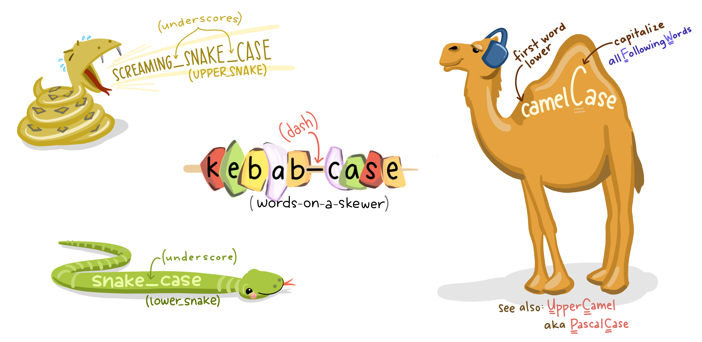

Introduction
Welcome to an introduction to python. This course is designed as a self-led introduction to R Markdown for anyone in Public Health Scotland.
Course Info
- This course is built to flow through sections and build on previous knowledge. If you’re comfortable with a particular section, you can skip it.
- Most sections have multiple parts to them. Navigate the course by using the buttons at the bottom of the screen to Continue or go to the Next Topic.
- The course will also show progress through sections, a green tick will appear on sections you’ve completed, and it will remember your place if you decide to close your browser and come back later.
What is Python?
Python is a powerful general purpose programming language with widespread use in many application domains. Python is open source and free to use, and available for all major operating systems.
How does Python run?
Traditionally, when a Python script is run, the entire script is interpreted and run from the top down.
a = 15
b = 10
c = a + b
print(c)When the above Python script is run, the entire script will be run
from the top down, resulting in an output of 25.
There are a number of advantages to having Python scripts run this way. To name a few:
- The script has a sequential flow
- It is easier to debug
- It is clearer and more readable
However, there are a number of ways to run individual lines of code
within a Python script, should that be preferred. In this course, we
will touch upon Jupyter Notebook in the IDE
section, where this can be accomplished.
IDE
Within this section, we will cover two IDEs which can be used to create and run Python scripts.
Jupyter Notebook
There are several environments where you can run Python codes, such as “JupyterLab”, “Jupyter Notebook”. In this training course, we will use “Jupyter Notebook”.
Jupyter Notebook is designed for the easy integration of text and Python programming. It provides a more interactive workflow for Python programming, analysis and reporting. Some of its key features are:
- Code completion
- Syntax highlighting
- Code refactoring (find and replace)
- Integrated documentation viewer
- Ability to combine text, equations and images as well as code in a single document
- All outputs of the executed code are saved and embedded in the notebook
- Cell based execution and editing of code/text segments
Open a New Jupyter Notebook
We can access “Jupyter Notebook” on Posit Workbench. After signing in, click on New Session and a diaglog box will pop up. Click on Editor and select “Jupyter Notebook” from the drop down list, and then Start Session.

You will see the interface looks like this. There are three main tabs in Jupyter on start-up:
- Files Your file directory
- Running Lists all of the notebooks currently running
- Clusters For using IPython in parallel with your cluster (beyond the scope of this training guidance)

To open a new Jupyter Notebook, click the “New” drop down menu on the Files tab and select “Python 3.10.2” under the notebooks heading. This will open a blank Notebook with an IPython console running underneath it.


The IPython console is used to input and execute Python code interactively. Outputs, errors and warning messages are directly shown in the same window. A command that has been entered into the console is executed by
Pressing Shift + Enter to execute all the codes in the current active cell and advance the cursor to the next cell. Or press the “run cell, select below” button on the toolbar.
Pressing Ctrl + Enter to execute all the codes in the current active cell. If you want to move to the next cell below, just simply click on the “insert cell below” button on the toolbar.
Command and Edit Modes
Jupyter notebook is a modal editor which means that the keyboard does different things depending on which mode the Notebook is in. There are two modes: edit mode and command mode.
- Edit mode - it is indicated by a green cell border and left sidebar, and a prompt showing in the editor area:

When a cell is in edit mode, you can type things such as Python codes into the cell, like a normal text editor. Enter edit mode by pressing Enter or using the mouse to click on a cell’s editor area.
- Command mode - Once you click somewhere else outside the cell or press “esc” on keyboard, the cell turns into Command mode. Command mode is indicated by a grey cell border and a blue sidebar:

When you are in command mode, you are able to edit the notebook as a whole, but not type into individual cells. Most importantly, in command mode, the keyboard is mapped to a set of shortcuts that let you perform notebook and cell actions efficiently. For example, if you are in command mode and you press C and V, you will copy and paste the current cell.
A full list of useful shortcuts is available by going to “Help > Keyboard Shortcuts” (You can also access by pressing H in command mode).
Markdown Text Cells
Markdown text cells support plain text, Markdown and HTML. It will be useful to create headings, text instructions etc using markdown to organise the notebook like a written document. A cell can be changed from code mode to markdown mode by going to the top menu bar “Cell > Cell Type > Markdown”. Or select “Markdown” from the dropdown list:

Or press M while in Command Mode and highlighting the cell.
Here is an example of typing some text in a markdown cell. You can use hash key “#” to indicate the size of heading, followed by a space and the text.

Then press Shift + Enter to finish.

Python Library
Python library is a collection of functions and methods that allows you to perform lots of actions without writing your own code. For example, “pandas” is a Python library for data manipulation and analysis, which is used a lot in this training guidance.
Foundations
This section will walk you through some of the foundational knowledge of Python, including structure, style, and key data types.
Structure
Indentation - where indentation in other programming languages are included as a style preference, indentation in Python is extremely important, as it indicates what blocks of code should be run.
Without proper indentations, your code will not run. Try to run the following code with improper indentation:
if 1 < 10:
print("One is less than ten.")Note the syntax error which was shown:
Now run the code with the proper indentation:
if 1 < 10:
print("One is less than ten.")Indentation not only affords proper functionality, but it also enhances readability and comprehension for yourself, and future co-developers.
Style
Naming - variables and filenames should have
meaningful names in snake_case format, preferring
all lower case.

Numbers
There are 3 main types of numbers that can be declared in Python.
age = 27 # Integers
height = 1.76 # Floating point numbers
k = 6.626e-32 # Using scientific notation
var1 = 2 + 5.2j # Complex numbersArithmetic Operators
The following are examples of all the arithmetic operators available in Python.
| Precedence | Operator | Description |
|---|---|---|
| 1 | + - |
Addition, Subtraction |
| 2 | * ** / |
Multiplication, Power, Division |
| 3 | // |
Floor Division (round down after division) |
| 4 | % |
Modulus (remainder after division) |
Strings
Strings in Python are an ordered sequence of characters, and can be declared with either single or double quotes.
name = 'John'
surname = 'Doe'Multiline strings can be declared with triple single and triple double quotes, but note that whitespace characters are recorded in the string e.g. for tabs and for newlines.
multiline = '''White space is
preserved
in multiline strings.'''
multilineThe print() function interprets these escape characters
as expected.
print(multiline)Different string quoting styles can be nested as only the outer one is used. You can also use a backslash to escape quote characters within the string if you need to display them.
nested_quotes = 'It\'s sometimes "necessary" to escape things'
nested_quotes
print(nested_quotes)For strings, the plus + sign will concatenate two
strings into one, and the asterisk * will repeat a string a
set number of times. Have a look and click ‘Run Code’ below to see the
output.
print('Hello' + ' ' + 'World')
print('Hello' + ' ' + 'World' * 4)
print('Hello' + (' ' + 'World') * 4)Boolean
Booleans represent either True or
False.
When Python code is run, expressions can be compared and a Boolean answer can be returned:
print(5 == 5)
print(10 == 2)
print(5 < 4)If a value has some sort of content, it is normally evaluated as true:
bool("Hi")
bool([])Note that the empty list in the second expression
returned False.
Data Types and Type Conversion
The type() function can be used to query the type of a
Python object, and any type conversion can be performed by using the
appropriate function e.g. int() for integer,
str() for string, and float() for a floating
point number.
myint = 12345
type(myint) # Check the data type of myint
mystr = str(myint) # Convert myint to a string
myfloat = float(myint) # Convert myint to a floating point number
mystr
myfloatData Structures
There are various data structures which are built into Python. Some of the main ones are:
Lists
- Lists are ordered collections of items.
- They are mutable, meaning you can add, remove, or modify elements.
- Lists can contain elements of different data types.
my_list = [1, 2, 'apple', 'banana']
print(my_list)Tuples
- Tuples are ordered collections of items, similar to lists.
- Tuples are immutable - once they are created, the elements cannot be changed.
- Tuples can contains elements of different data types.
my_tuple = (1, 2, 'apple', 'banana')
print(my_tuple)Dictionaries
- Dictionaries are unordered collections of key-value pairs.
- They are mutable, and each key within a dictionary must be unique.
- Dictionaries are used when you need to associate some data (value) with a specific identifier (key).
my_dict = {'name': 'John', 'age': 30, 'city': 'New York'}
print(my_dict)You can then retrieve associate values as such:
my_dict = {'name': 'John', 'age': 30, 'city': 'New York'}
name_value = my_dict['name']
print(name_value)Set
- Sets are unordered collections of unique items.
- They are mutable, but their elements must be immutable.
- Sets are useful for operations like finding intersections, unions, and differences between collections.
my_set = {1, 2, 3, 4, 5}
print(my_set)Strings
- Strings are sequences of characters.
- They are immutable, meaning you cannot change the characters in a string once it’s created.
- Strings support various operations and methods for text manipulation.
my_string = 'Hello, World!'
print(my_string)Functions
In Python, functions are a block of organised and reusable code which performs a specific task.
Functions can be called from anywhere within the script, and can be stored anywhere within the script - however, it is custom convention to store functions are the top, or near the top, of the script in order to enhance readability and maintenance of the code.
Structure
Functions are made up of the:
- Defined keyword
def - Function name
()parentheses which may include parameters.- Function body
def <function_name>():
function_bodyExample:
def greet():
print("Hello!")When you run the above code, you will see that nothing is outputted - this is because the function has not been called.
def greet():
print("Hello!")
greet()Parameters and Arguments
Parameters are variables which are listed inside the parentheses in the function definition.
They are placeholders are actual values which will be passed into the function when it is called.
The values passed into a function are called arguments.
def greet(name):
print("Hello, " + name + "!")
greet("Bob")You can also pass through multiple arguments:
def add(a,b,c):
print(a + b + c)
result = add(1,2,3)Return
The return statement can optionally be used to return the data back to the caller.
def add(a,b,c):
return a + b + c
result = add(1,2,3)
print(result)Control Flow & Iteration
As is the case in most other programming languages, control flow is where decisions are made, and iteration is where processes are repeated.
Comparison Operators
Here are the most commonly used comparison operators used in conditional statements in Python:
| Operator | Description |
|---|---|
> < |
Greater than, Less than |
== != |
Equal to, Not Equal to |
<= >= |
Less than or equal to, Greater than or equal to |
and or |
And, Or |
Control Flow - If
if is the most common comparison operator used in
Python.
if 5 == 5:
print("5 is equal to 5")
if 5 == 4 or 5 == 5:
print("Either 5 is equal to 4, or 5 is equal to 5")
if 6 <= 6:
print("6 is less than or equal to 6")There are some further statements when using if that you
should be familiar with:
elifis short for else if and is used for multipleifconditionselseis executed if the precedingifandelifstatements are false
def check_if_number_is_1_2_or_3(number):
if number == 1:
print("The number is 1")
elif number == 2:
print("The number is 2")
else:
print("The number is 3")
check_if_number_is_1_2_or_3(3)For loop
For loops are used for iteration.
There are multiple ways to use for loops.
Iterating over a list:
list_of_fruits = ["apple","banana","cherry"]
for fruits in list_of_fruits:
print(fruits)Using Enumerate:
You can also use enumerate to iterate over a sequence
and get the index position of each item also:
list_of_fruits = ["apple","banana","cherry"]
for index, fruits in enumerate(list_of_fruits):
print(index,fruits)Iterating over a string:
for char in "Python":
print(char)Iterating over a range:
range in Python determines the position of the value,
rather than the value itself.
Remember that positions in Python begin at position
0.
for i in range(5):
print(i)Nested Loops
adjective = ["red", "big", "tasty"]
fruits = ["apple", "banana", "cherry"]
for x in adjective:
for y in fruits:
print(x, y)Importing and Exporting Datasets
The Python language can be used for data analysis. The first step in performing analysis is to access your dataframe (i.e. your dataset). This section will introduce you how to import and export datasets.
Read and Save .csv Files
Various commonly used file formats can be read using Python, such as .csv and .xls files. You can import these files by using the “pandas” library. The general code is
dataset_name = pd.read_csv("filename.csv")There are three pieces to this code:
- to the right of the
=sign is the pandas import code:pd.read_csv("filename.csv") - to the left of the
=sign is the name we’ve given to the dataset:dataset_name - the
=sign tells Python to connect the namedataset_nameto the imported dataset
This is an example of a more general concept in Python called
variable assignment. A variable in
Python is a name for referring to an object, just like
dataset_name refers to the imported dataset. The object in
question is called the value of the variable.
To assign a value to a variable, we use the = sign as
above:
variable = valueAlso remember that Python is a case-sensitive language.
Here is a real example for importing a dataset “borders_inc_age.csv”. Have a look and click ‘Run Code’ below to see the output.
# Import pandas library
import pandas as pd
# Read in the dataset
borders = pd.read_csv("data/borders_inc_age.csv")
# Check the first few rows of the dataset. Default is 5 rows.
borders.head() If you make any changes to borders and would like to save it as a new .csv file, use the following command:
borders.to_csv("file path and name")Read Specific Columns
It is possible to omit certain columns from a dataframe when importing a file by using usecols command:
# Read in the dataset with specific columns
borders2 = pd.read_csv("data/borders_inc_age.csv", usecols = ['URI', 'HospitalCode', 'Specialty'])
# Check the first few rows of the dataset. Default is 5 rows.
borders2.head() It is also possible to rearrange the columns within an imported dataframe. The columns in the example above can be rearranged using the following code:
# Rearrange the columns
borders3 = borders2[['URI', 'Specialty', 'HospitalCode']]
# Check the first few rows of the dataset. Default is 5 rows.
borders3.head()Once the dataframe has been read in, you can delete a specific column (or columns) that you do not need using del command:
# Delete URI column
del borders2["URI"]
# Check the first few rows of the dataset. Default is 5 rows.
borders2.head()Knowledge Check
Code Exercise
# Hello World example
hello_world <- "Hello World"
print(hello_world)Explore
Mean/Median & Summary
mean()andmedian()are passed arrays of values (usually from a data frame) to return the mean and median value.describe()returns all summary statistics based on a given array.
For example,
<df_name>["<col_name>"].median() will generate
the median value of the values within the stated
column.
In the exercise below, you have the borders data-set loaded as
borders_data. See if you can get the mean value for
LengthOfStay, store it in a variable, and print that
variable. Use the hint button if you need some help.
borders_data = pd.read_csv("data/borders_inc_age.csv")
borders_databorders_data = pd.read_csv("data/borders_inc_age.csv")
borders_data["LengthOfStay"]borders_data = pd.read_csv("data/borders_inc_age.csv")
borders_data["LengthOfStay"].mean()borders_data = pd.read_csv("data/borders_inc_age.csv")
mean_value = borders_data["LengthOfStay"].mean()
print(mean_value)borders_data = pd.read_csv("data/borders_inc_age.csv")
mean_value = borders_data["LengthOfStay"].mean()
print(mean_value)Frequencies & Crosstabs
- Frequency:
<df_name>["<col_name>").value_counts()] - Crosstab:
pd.crosstab(<df_name>["<col_1_name>"], <df_name>["<col_2_name>"]) - Crosstab & Add Col/Row Totals:
pd.crosstab(<df_name>["<col_1_name>"], <df_name>["<col_2_name>"], margins = True)tab
Create a crosstab for HospitalCode and Sex,
add column and row totals, store the table in a variable, and print it
out. Use the hint button if you need some help.
borders_data = pd.read_csv("data/borders_inc_age.csv")borders_data = pd.read_csv("data/borders_inc_age.csv")
...pd.crosstab(...)borders_data = pd.read_csv("data/borders_inc_age.csv")
crosstab_hospitalcode_sex = pd.crosstab(
borders_data["HospitalCode"], borders_data["Sex"]...)borders_data = pd.read_csv("data/borders_inc_age.csv")
crosstab_hospitalcode_sex = pd.crosstab(
borders_data["HospitalCode"], borders_data["Sex"], margins = True)
print(crosstab_hospitalcode_sex)borders_data = pd.read_csv("data/borders_inc_age.csv")
crosstab_hospitalcode_sex = pd.crosstab(
borders_data["HospitalCode"], borders_data["Sex"], margins = True)
print(crosstab_hospitalcode_sex)Wrangle – Part 1
For the next sections, we will focus on using the pandas module manipulate data and data frames.
Location
There are multiple ways to wrangle data in Python - some are more straightforward than others.
To begin efficiently locating and manipulating data, it would be beneficial to become familiar with the concept of locating data in a dataframe.
The loc and iloc attributes are used for
indexing, which allows for the locating of data from a dataframe based
on row and column labels/indexes.
loc - Label-based indexing (such as Hospital Codes,
Names, etc.). iloc - Integer-based indexing (remember
Python indexes count from 0).
By default, loc and iloc locates row
indexes, instead of column indexes.
<df_name>.loc['<row_label>'] will select the
first row with row_label as the label index.
<df_name>.iloc['<row_index_label>'] will select
the row at index == row_index_label.
This does not mean the location attributes are isolated to only locating rows - in fact, the real power of the location attributes is in its ability to freely locate relevant rows, columns, values, etc.
It would further be helpful to remember that in some methods, the
axis stated will indicate whether it is targetting a row or
a column.
axis = 0 = row axis = 1 = column
In the next few sections, we will see how useful the location attributes can be.
Select / Slice Out Columns
By far, the most straightforward way to select a column is by the following method:
- Selecting/Slicing Out a column:
<df_name>["<col_name>"]
However, by using loc and iloc, we can
start to specify further:
Selecting/Slicing Out a column:
<df_name>.loc["<row_index>","<column_index>"]Example:
borders_data.loc[:,"Specialty"]will obtain all the rows from theSpecialtycolumn.
You may be wondering why using the loc attribute is
helpful here when the first method is much more simple.
Using loc, you have the ability to select specific rows
within that column
- Example:
borders_data.loc[0:2,"HospitalCode"]will obtain the first 3 rows from theHospitalCodecolumn.
Read in the data stored in the borders_inc_age csv file, select/slice
out the entire HospitalCode column using pandas, and print
out the selected column.
borders_data = pd.read_csv("data/borders_inc_age.csv")
column_hospital_code = borders_data = pd.read_csv("data/borders_inc_age.csv")
column_hospital_code = borders_data.locborders_data = pd.read_csv("data/borders_inc_age.csv")
column_hospital_code = borders_data.loc[:,]borders_data = pd.read_csv("data/borders_inc_age.csv")
column_hospital_code = borders_data.loc[:,'HospitalCode']
print(column_hospital_code)borders_data = pd.read_csv("data/borders_inc_age.csv")
column_hospital_code = borders_data.loc[:,'HospitalCode']
print(column_hospital_code)Select Rows
The pandas library has multiple way to select rows, depending on your criteria.
Select Rows by index:
<df_name>.iloc[<index_number>]']Example:
borders_data.iloc[0]This will show the first row of the dataframeSelect Rows which have a specific value in a specific column:
<df_name>[<df_name>['<column_name>'] == '<row_label>']Example:
borders_data[borders_data['HospitalCode'] == 'B120H']This will show all the rows which haveB120Hin theHospitalCodecolumnSelect Rows by index:
<df_name>.loc['<row_label>']']Example:
borders_data.loc['row_label']This will locate the first instance of the row with row_label as the label index - please note, this csv file does not have row labels
Read in the borders_inc_age csv file, and select all the rows with
Specialty == A1.
borders_data = pd.read_csv("data/borders_inc_age.csv")borders_data = pd.read_csv("data/borders_inc_age.csv")
rows_of_a1 = borders_data[...]borders_data = pd.read_csv("data/borders_inc_age.csv")
rows_of_a1 = borders_data[borders_data['...']...]borders_data = pd.read_csv("data/borders_inc_age.csv")
rows_of_a1 = borders_data[borders_data['Specialty']=='A1']borders_data = pd.read_csv("data/borders_inc_age.csv")
rows_of_a1 = borders_data[borders_data['Specialty']=='A1']Add a New Row/Column
Adding a new row/column is straightforward.
When adding a new row, you can first create a dictionary, where
keys (column names) and values (corresponding
values in the new row) are mapped together.
- Create dictionary of mapped keys (columns) and values (row values):
new_row_data = {'<column_name>':'<row_value>','<column_name>':'<row_value>','<column_name>':'<row_value>'}
Then, you can append the new row into the dataframe.
<df_name> = <df_name>.append(new_row_data)
If you want to leave the value blank, you can input None
into the row_value.
- Add new column:
<df_name>['<new_column_name>'] = <row_value>
This will create a new column with all the rows populated by the row_value.
Read in the borders_inc_age csv file. Create a new
column called number_of_eyebrows with the row_value as
2 for all the rows.
borders_data = pd.read_csv("data/borders_inc_age.csv")borders_data = pd.read_csv("data/borders_inc_age.csv")
borders_data[...] ...borders_data = pd.read_csv("data/borders_inc_age.csv")
borders_data['number_of_eyebrows'] = ....borders_data = pd.read_csv("data/borders_inc_age.csv")
borders_data['number_of_eyebrows'] = 2borders_data = pd.read_csv("data/borders_inc_age.csv")
borders_data['number_of_eyebrows'] = 2Delete a Row/Columns
There are multiple ways to delete rows and columns.
When deleting a row, you could create a dataframe with the rows containing certain row_values filtered out:
- Deleting a row:
<df_name> = <df_name>[<df_name>['<column_name>'] != '<row_value>']
You can also delete rows based on their index and row_label by slicing the locations.
- Removing the first row:
<df_name> = <df_name>.iloc[1:]
If we want to remove only the 2nd row using the same method, you would need to locate the specific rows you want to keep, and append them together.
- Removing the second row:
<df_name> = <df_name>.iloc[:1].append(<df_name>.iloc[2:]
Alternatively, you could use the drop() method.
Removing the second row:
<df_name> = <df_name>.drop(<df_name>.index[1])Removing the second row row_label:
<df_name> = <df_name>.drop('<row_label>', axis=0)axis=0specifies you are removing a row.Removing the second row by index position:
<df_name> = <df_name>.drop(index_position, axis=0)
The drop() method can also be used to drop columns.
Removing a column by label:
<df_name> = <df_name>.drop('<column_name>', axis=1)axis=1specifies you are removing a column.Removing a column by index position:
<df_name> = <df_name>.drop(<df_name>.columns[index_position], axis=1)
Read in the borders_inc_age csv. Remove all the rows which have
Male as the value in the Sex column.
borders_data = pd.read_csv("data/borders_inc_age.csv")borders_data = pd.read_csv("data/borders_inc_age.csv")
borders_data = ...borders_data = pd.read_csv("data/borders_inc_age.csv")
borders_data = borders_data[...]borders_data = pd.read_csv("data/borders_inc_age.csv")
borders_data = borders_data[borders_data[...] != ...]borders_data = pd.read_csv("data/borders_inc_age.csv")
borders_data = borders_data[borders_data['Sex'] != 'Male']Wrangle – Part 2
Manipulate Strings
There are a number of ways to manipulate strings in Python. Here are a few methods to achieve various outputs:
Split values at a delimiter:
<df_name>['<column_name>'] = <df_name>['<column_name>'].str.split('<delimiter>')Example:
borders_data['ManagementofPatient'] = borders_data['ManagementofPatient'].str.split('a')
After the above line of code, if you
print(borders_data), you will see that all the values in
the column ManagementofPatient has been split at the value
‘a’.
- Strip values of leading and trailing white space:
<df_name>['<column_name>'] = <df_name>['<column_name>'].str.strip() - Convert values to upper case:
<df_name>['<column_name>'] = <df_name>['<column_name>'].str.upper() - Convert values to lower case:
<df_name>['<column_name>'] = <df_name>['<column_name>'].str.lower() - Replace values:
<df_name>['<column_name>'] = <df_name>['<column_name>'].str.replace('<old_value>','<new_value>')
It is important to note that this is not an exhaustive list of all the string manipulation methods - there are many more to find out and use, depending on your specification requirements.
In the exercise below, read the borders_inc_age csv in, then replace
all instances of B120H in the HospitalCode
column with the phrase BRILLIANT.
borders_data = pd.read_csv("data/borders_inc_age.csv")borders_data = pd.read_csv("data/borders_inc_age.csv")
borders_data['HospitalCode'] = ...borders_data = pd.read_csv("data/borders_inc_age.csv")
borders_data['HospitalCode'] = borders_data['HospitalCode']...borders_data = pd.read_csv("data/borders_inc_age.csv")
borders_data['HospitalCode'] = borders_data['HospitalCode'].str.replace('B120H','BRILLIANT')borders_data = pd.read_csv("data/borders_inc_age.csv")
borders_data['HospitalCode'] = borders_data['HospitalCode'].str.replace('B120H','BRILLIANT')Recode
Another way to recode data which offers more flexibility is by using
the loc attribute.
<df_name>.loc[<df_name>['<column_name>'] == <existing_value>, '<column_name>'] = <new_value>
This method uses the boolean operator ==, which means
equal to.
This operator can be substituted with others.
For example, in the case that you wish to find all the values which
are less than 5 in a given column, and replace them with
Small, you would code the following:
data_frame.loc[data_frame['column1'] < 5, 'column1'] = 'Small'
As you can imagine, this methods affords a great level of versatility in data analysis.
In the exercise below, read in the borders_inc_age csv
file, and recode all instances of B120H in the
HospitalCode column to Recoded.
borders_data = pd.read_csv("data/borders_inc_age.csv")borders_data = pd.read_csv("data/borders_inc_age.csv")
borders_data.loc[borders_data[...] = ...borders_data = pd.read_csv("data/borders_inc_age.csv")
borders_data.loc[borders_data['HospitalCode'] == ..., ...] = 'Replaced'borders_data = pd.read_csv("data/borders_inc_age.csv")
borders_data.loc[borders_data['HospitalCode'] == 'B120H', 'HospitalCode'] = 'Replaced'borders_data = pd.read_csv("data/borders_inc_age.csv")
borders_data.loc[borders_data['HospitalCode'] == 'B120H', 'HospitalCode'] = 'Replaced'Rename
Renames specific columns in a data frame:
<data_frame>.rename(columns={'<old_column_name>':'<new_column_name>'})
The column HospitalCode in borders_data
doesn’t follow the style guide, rename it to
Hospital_Code.
borders_data = pd.read_csv("data/borders_inc_age.csv")borders_data = pd.read_csv("data/borders_inc_age.csv")
borders_data.rename(...)borders_data = pd.read_csv("data/borders_inc_age.csv")
borders_data.rename(columns={...})borders_data = pd.read_csv("data/borders_inc_age.csv")
borders_data.rename(columns={'HospitalCode':'Hospital_Code'})borders_data = pd.read_csv("data/borders_inc_age.csv")
borders_data.rename(columns={'HospitalCode':'Hospital_Code'})Group By
The groupby() function in Pandas allows us to split a
Dataframe into group based on one or more keys, such as column values,
and then perform operations on them, such as aggregations or
transformations.
<dataframe>.groupby('<column_name>')
Read in the borders_inc_age csv. Then, apply the
groupby() function to the HospitalCode
column.
borders_data = pd.read_csv("data/borders_inc_age.csv")borders_data = pd.read_csv("data/borders_inc_age.csv")
borders_data.groupby('HospitalCode')Aggregate Dataframe
With the groupby() function, we can apply the aggregate
agg() function in conduct operations on specific
columns.
<grouped_variable>.agg({<'column'> : <'function'>})
Multiple operations can also be carried out.
<grouped_variable>.agg({<'column'> : [<'function1'>, <'function2'>,<'function3'>]})
Multiple columns can aggregated.
<grouped_variable>.agg({<'column1'> : [<'function1'>, <'function2'>,<'function3'>],<'column2'> : [<'function1'>, <'function2'>,<'function3'>]})
For example, let’s store the above
borders_data.groupby('HospitalCode') into a variable called
grouped_by_hospital_code.
We can now find the mean, max,
count and sum of the LengthOfStay
variables, grouped by HospitalCode.
grouped_by_hospital_code.agg({'LengthOfStay': ['mean','max','count','sum']})
We could also more easily use the describe() function
within the agg() function detailed above.
Give that a go: Read in the borders_inc_age csv file,
then group by HospitalCode, storing that into a variable
called grouped_by_hospital_code. Aggregate using the method
above. Use the describe() function to find important values
from the LengthOfStay column.
borders_data = pd.read_csv("data/borders_inc_age.csv")borders_data = pd.read_csv("data/borders_inc_age.csv")
group_by_hospital_code = borders_data.groupby('HospitalCode')
...borders_data = pd.read_csv("data/borders_inc_age.csv")
group_by_hospital_code = borders_data.groupby('HospitalCode')
group_by_hospital_code.agg(
...)borders_data = pd.read_csv("data/borders_inc_age.csv")
group_by_hospital_code = borders_data.groupby('HospitalCode')
group_by_hospital_code.agg(
{'LengthOfStay':'describe'})borders_data = pd.read_csv("data/borders_inc_age.csv")
group_by_hospital_code = borders_data.groupby('HospitalCode')
group_by_hospital_code.agg(
{'LengthOfStay':'describe'})Merge Dataframe

left- taking all records from the “left”,data_frame_1, and adding matched records from the “right”,data_frame_2, introducingNaNwhere the “right”,data_2had no matching recordsright- taking all records from the “right”,data_frame_2, and adding matched records from the “left”,data_frame_1, introducingNaNwhere the “left”,data_frame_1had no matching recordsinner- producing only records where there were matches on both given data setsfull- retaining all records from both data sets and introducingnaon either one where there was no matching records
By default, the merge type will be inner unless stated
otherwise.
You define the merge/join type by defining the
how = '<type>'.
You should further define what common columns/variables the data
frames should merge on by defining the
on = ['<insert_column>']
<data_frame_1>.merge(<data_frame_2>, how = '<join_type>', on = ['<insert_column_1>' , '<insert_column_2>'])
2 new data-sets have been loaded, baby5 and
baby6, these have common variables FAMILYID
and DOB. Using a left join, merge them
together.
borders_data = pd.read_csv("data/borders_inc_age.csv")
baby5 = pd.read_csv("data/Baby5.csv")
baby6 = pd.read_csv("data/Baby6.csv")borders_data = pd.read_csv("data/borders_inc_age.csv")
baby5 = pd.read_csv("data/Baby5.csv")
baby6 = pd.read_csv("data/Baby6.csv")
baby5.merge(...)borders_data = pd.read_csv("data/borders_inc_age.csv")
baby5 = pd.read_csv("data/Baby5.csv")
baby6 = pd.read_csv("data/Baby6.csv")
baby5.merge(baby6, how = '...', on = [...])borders_data = pd.read_csv("data/borders_inc_age.csv")
baby5 = pd.read_csv("data/Baby5.csv")
baby6 = pd.read_csv("data/Baby6.csv")
baby5.merge(baby6, how = 'left', on = ['FAMILYID','DOB'])borders_data = pd.read_csv("data/borders_inc_age.csv")
baby5 = pd.read_csv("data/Baby5.csv")
baby6 = pd.read_csv("data/Baby6.csv")
baby5.merge(baby6, how = 'left', on = ['FAMILYID','DOB'])Help & Feedback
Feedback
[Insert iframe for Google/Microsoft Forms]